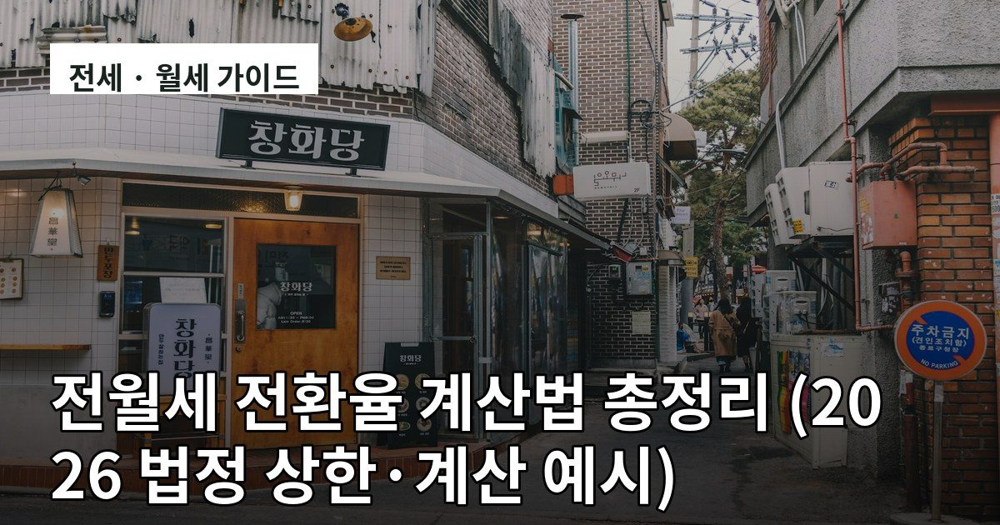

공유 문구 복사 (티스토리 가이드)
Chrome/사파리에서 열어 버튼으로 복사하세요. 카드 이미지는 길게 눌러 저장.
전월세 전환율
🏠 전세를 월세로 바꿀 때, 얼마가 적당할까? 1️⃣ 법정 상한 = 한국은행 기준금리 + 2%p (최대 10%) 2️⃣ 월세 = (전환 보증금 × 전환율) ÷ 12 3️⃣ 전환금액 1억이면 전환율 1%p 차이로 월 8만 원 차이! ⚠️ 상한을 모르고 계약하면 연 100만 원을 그냥 냅니다. 👉 https://wildmach.tistory.com/1225 #전월세전환율 #전세 #월세 #임대차 #부동산
📋 문구 복사
🔗 링크만 복사

주택임대소득
💰 월세 받는데 세금 얼마나 나올까? 1️⃣ 연 2,000만 원 이하면 분리과세(14%) 선택 가능 — 대부분 유리 2️⃣ 필요경비: 등록임대 60% / 미등록 50% 3️⃣ 사업자등록 안 하면 수입금액의 0.2% 가산세 월세 연 1,200만 원 → 세액 약 61만 원 수준입니다. 👉 https://wildmach.tistory.com/1223 #주택임대소득 #분리과세 #임대소득세 #절세 #월세
📋 문구 복사
🔗 링크만 복사
공시가격
📢 공시가격 한 줄이 세금 전체를 바꿉니다 1️⃣ 매년 1월 1일 기준 → 4월 30일 공시 2️⃣ 재산세·종부세·취득세·건강보험료까지 연쇄 영향 3️⃣ 부당하면 공시 후 30일 내 이의신청 (실거래가 증빙이 가장 강력) 4~5월에 꼭 확인하세요. 👉 https://wildmach.tistory.com/1227 #공시가격 #재산세 #종부세 #건강보험료 #부동산
📋 문구 복사
🔗 링크만 복사